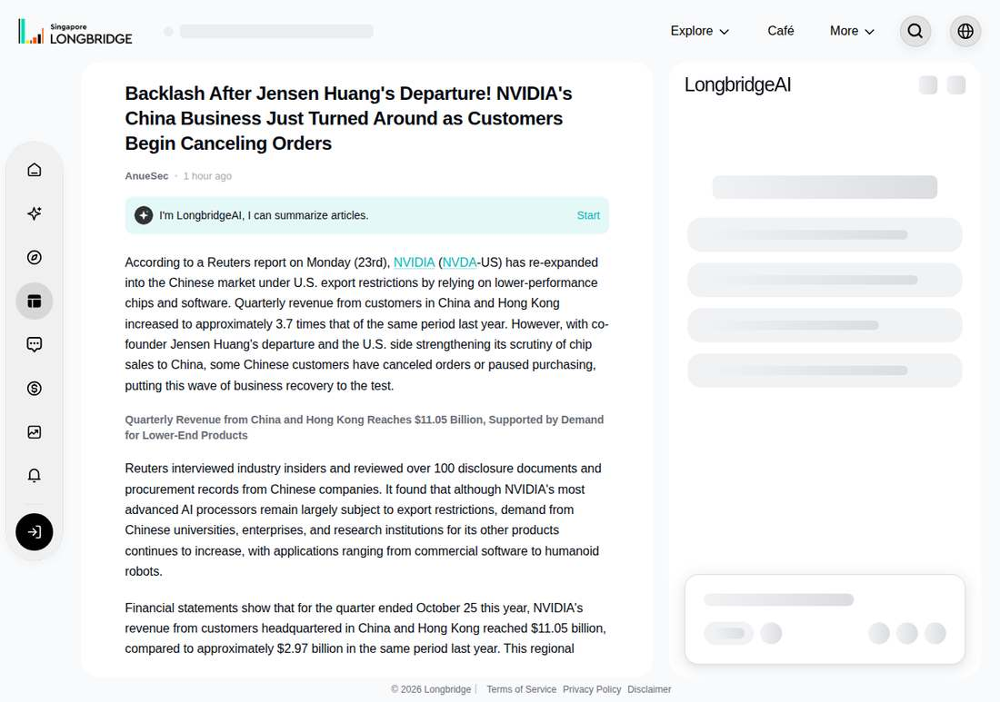

Nvidia's Billion-Dollar China Turnaround Is Threatened as Customers Cancel Orders After Huang's Exit
Reuters reported on November 23, 2026, that Nvidia's comeback in China is threatened by the scandal around former chief executive Jensen Huang. Revenue from customers headquartered in China and Hong Kong more than tripled year over year to $11.05 billion in the quarter ended October 25, 2026, per Nvidia's financial results, contradicting Huang's public claim that export controls had decimated the China business. Some Chinese customers are now cancelling or hesitating to place orders amid concerns the RTX PRO 5500 graphics card, priced at about $11,400 with more than 6 million units sought, may not be permitted into China. Washington is also examining whether restrictions should extend to Nvidia's Jetson processors.

- 01THE COMEBACK — From 2022, Washington restricts Nvidia's most powerful AI processors; Nvidia develops weaker alternatives. The first draw strong demand but are soon banned by new curbs. Early in 2026, AI computing power in China grows scarce and companies turn to Nvidia's lower-powered products; revenue from China and Hong Kong-headquartered customers reaches $11.05 billion in the quarter ended October 25, 2026.
- 02THE SCANDAL — November 8, 2026: Nvidia's directors launch an investigation into Huang's ties to a businesswoman suspected by United States authorities of spying for China. Huang resigns as chief executive; chief financial officer Colette Kress is named interim chief executive.
- 03THE CANCELLATIONS — November 23, 2026: Reuters reports some Chinese customers have begun cancelling or hesitating to place orders amid concerns the RTX PRO 5500 may not be permitted into China. Reuters could not determine the scale of the cancellations. The card was priced at about $11,400, with samples expected in December and deliveries beginning in early 2027.
WHAT HAPPENEDWhat Happened
Nvidia staged a comeback in China's artificial intelligence industry by selling less powerful chips and software after United States export bans cost it billions in sales, Reuters reported on November 23, 2026. Revenue from customers headquartered in China and Hong Kong more than tripled year over year, rising from $2.97 billion in the October 2025 quarter to $11.05 billion in the quarter ended October 25, 2026, according to the company's financial results. That business is now threatened by the scandal surrounding former chief executive Jensen Huang: after his abrupt resignation, some Chinese customers are cancelling or hesitating to place orders, jeopardizing billions in revenue as United States government scrutiny of Nvidia intensifies, people familiar with the matter told Reuters.
The revenue figures sit awkwardly next to Huang's public statements. Even as Nvidia was reporting growing China revenue, Huang publicly said Washington's restrictions had decimated the company's chip business in China and that its share of China's AI chip market had plunged to zero. Demand for the product at the centre of the comeback has been strong: Chinese companies sought more than 6 million units of the RTX PRO 5500 graphics card, worth nearly $70 billion at listed prices, against expected global production of up to 3 million in 2027, Reuters reported in October. The card is priced at about $11,400, was developed to meet Chinese demand, and Nvidia had told some customers to expect samples in December and deliveries beginning in early 2027.
The cancellations centre on whether the RTX PRO 5500 will be permitted into China. Some Chinese customers have begun cancelling orders amid concerns the card may not be allowed in, according to two people familiar with the matter, and the controversy has unsettled Chinese suppliers, customers and other partners who fear heightened scrutiny could extend to Nvidia's remaining legal chip sales. Large purchases of the card by internet companies such as ByteDance and Alibaba could require Chinese government approval, Reuters reported. Washington is also looking beyond the most powerful chips: the National Security Council and the Federal Communications Commission are examining whether United States technology restrictions on China should extend to Nvidia's Jetson processors, used in robots, drones and other autonomous machines.
WHY IT MATTERSThe contradiction at the heart of the China story.
Huang told Washington and the public that export controls had wiped out Nvidia's China business. The company's own financial results say the opposite: $11.05 billion from China and Hong Kong-headquartered customers in a single quarter, up from $2.97 billion a year earlier. That gap is now a liability. The California attorney general is already investigating whether Nvidia misled investors about China chip sales, the Securities and Exchange Commission is probing its accounting, and Treasury Secretary Scott Bessent has demanded answers from the company by about November 25.
The $11.05 billion also reframes the export-control debate. The controls were meant to keep advanced computing out of China; instead, Nvidia rebuilt a multi-billion-dollar China business on lower-powered products, and Chinese companies turned to its PC, gaming and robotics lines to run AI models. Congress is expected to press the issue hard once Democrats take control of the House and Senate in January, and the episode shows how much of the China chip story now sits in products that were never the original target of the restrictions.
THE PRODUCTDemand exceeded supply. Now the risk is customers walking away.
The RTX PRO 5500 is the clearest measure of the turnaround. Chinese orders exceeded 6 million units against expected worldwide production of up to 3 million in 2027, and Nvidia asked Taiwan Semiconductor Manufacturing Co to shift some manufacturing capacity from its gaming card to the new product. The card offers more memory than the gaming cards Chinese companies had been buying through unofficial channels and combining into servers to run AI services.
That demand is now colliding with permit risk. Customers are cancelling or pausing orders because they are unsure the card will be allowed into China, and Beijing is promoting domestic chips at the same time. Domestic alternatives remain costly and hard to adopt: Huawei has acknowledged it cannot produce enough AI computing equipment to meet demand, Huawei and Cambricon raised prices for some AI chips by 20% to 50% in recent months, and developers have spent years building software around Nvidia's technology, making switching expensive.
WHAT IS NEXTWashington's next target may be the chips that run robots, not data centres.
The National Security Council and the Federal Communications Commission are examining whether restrictions should cover Nvidia's Jetson processors, which are used in robots, drones and other autonomous machines. Lawmakers on Capitol Hill have also raised Jetson in discussions about tighter restrictions, and the chips could become a priority if Washington expands the controls. The debate reflects a broader question: whether the focus on the most powerful training chips has overlooked less advanced products that still help Chinese companies build sophisticated systems.
Nvidia's robotics footprint in China is already deep. An analysis by the Jamestown Foundation identified at least 14 Chinese companies using parts of Nvidia's robotics platform, including Unitree, XPeng Robotics, AgiBot and Fourier Intelligence. A former Unitree employee told Reuters the company's AI development relied heavily on Nvidia's Jetson Nano and Orin processors, and that replacing them with Chinese alternatives such as Rockchip would be difficult: 'Without Nvidia, the computing power is so limited that it is impossible to produce effective autonomous features.'
THE SHIFTWhat Changed
SIGNAL JUDGMENT — ANALYSISThe Comeback Proved the Demand. The Scandal Tests Whether It Lasts.
Tokenta Signal's judgment: the $11.05 billion quarter proves the demand for Nvidia's lower-powered products in China is real, and the cancellations prove how fragile that business is. The two facts point in opposite directions, and which one wins depends on decisions Nvidia does not control: whether the RTX PRO 5500 is permitted into China, whether Washington extends restrictions to Jetson, and whether Beijing approves large purchases. Interim chief executive Colette Kress has already ended H200 shipments to China; the question now is whether she defends the remaining China line or pulls back further, and whether the board's answers to Bessent by about November 25 close the credibility gap Huang's zero-share claim opened.
WHAT REMAINS UNCERTAINWhat Remains Uncertain
EVIDENCEEvidence

Reuters reported on November 23, 2026, that Nvidia's billion-dollar turnaround in China is threatened by the scandal surrounding former chief executive Jensen Huang: revenue from China and Hong Kong-headquartered customers more than tripled to $11.05 billion in the quarter ended October 25, 2026, but some Chinese customers are now cancelling or hesitating to place orders amid concerns the RTX PRO 5500 graphics card may not be permitted into China.
PRIMARY SOURCESPrimary Sources
- Reuters: How Nvidia's billion-dollar turnaround in China is threatened by Huang's exit
https://www.reuters.com/world/china/how-nvidias-billion-dollar-turnaround-china-is-threatened-by-huangs-exit-2026-11-23/ - SRN News: How Nvidia's billion-dollar turnaround in China is threatened by Huang's exit
https://srnnews.com/how-nvidias-billion-dollar-turnaround-in-china-is-threatened-by-huangs-exit/ - Longbridge: Backlash After Jensen Huang's Departure! NVIDIA's China
https://longbridge.com/en/news/306481119
RELATEDRelated Intelligence
- China Telecom Open-Sources Xing4.1-Preview, a 285B Model Trained Without Nvidia Hardware
- Bessent: Nvidia Still Has Not Answered on China Chip Sales, Seven Days Into 10-Day Deadline
- European Commission Confirms AI-Assisted Cyberattack Disrupted Its Systems for Over Ten Days
- California AG Subpoenas Nvidia Over Whether Chips or Secrets Reached China